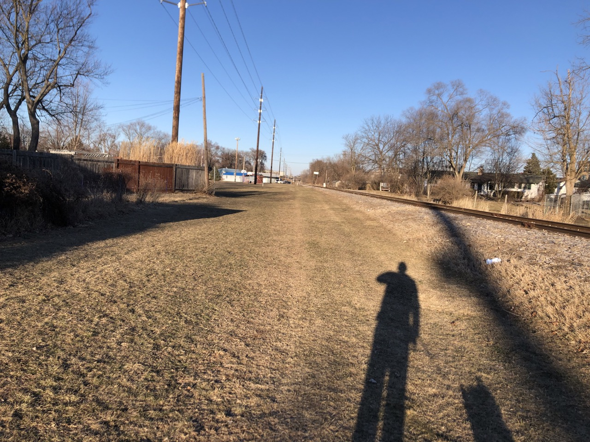

On February 25th, 2026 you and your pup went for a X mile walk departing the Eastmorland area, which has been described by the Community Association as "a cohesive neighborhood of approximately 3,200 residents on the east side of Madison, Wisconsin near Lake Monona and Olbrich Park." The temperature was X°F with a real feel of X°F due to the X mi/hr wind blowing from the X. You logged over X steps over the X minute walk, ascending Xft and logging 15 stops detailed below.

lorem epsum